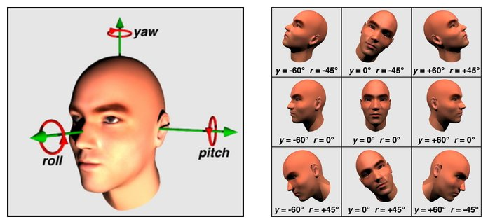
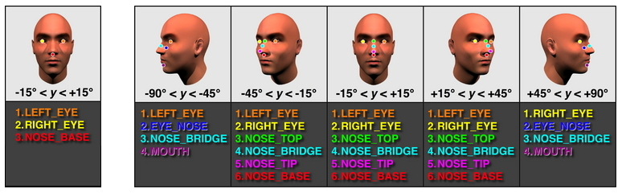

Table of Contents
Face detection is the process of automatically locating human faces in visual media (digital images or video). Once a face is detected, it can be searched for landmarks such as the eyes, nose, and mouth.
Back to top.
A landmark is a point of interest within a face. The left eye, right eye, and nose base are all examples of landmarks. The SDK has the ability to find landmarks on a detected face. Please see the Landmarks section for an in-depth discussion of landmarks.
Back to top.
The term 'object' is used throughout the SDK. It is the primary data structure in the SDK as it indicates the position, orientation, size, and confidence of detected faces. In fact, for the FTR-SDK, the terms 'object' and 'face' can really be used interchangeably. However, the data structures do not use the term 'face' because future SDKs could potentially look for objects other than faces. Using the term 'object' allows the same data structures to be used in the event that such an SDK is developed. At this time, Pittsburgh Pattern Recognition has no plans to develop SDKs that detect objects other than faces (and their constituent landmarks).
Back to top.
Most functions provided by the SDK require a context handle as their first parameter. Each context references a
specific set of configuration parameters. Using these context handles, the SDK enables multiple instances to be
maintained in parallel — each with its own configuration. Contexts can be used to support
multi-threaded applications or just different configurations within the
same thread. A context is obtained by calling
ppr_get_context.
Back to top.
The FTR-SDK deals with two different image types. The
ppr_raw_image_type is used to store data after it is
read from its input source. However, the SDK functions use their own internal format,
ppr_image_type. Therefore the raw image format must be
converted to the SDK's internal format before it can be used. This can be achieved by calling
ppr_create_image.
The PittPatt Raw Image I/O Library provides functions to easily read and write raw images directly from common image formats. If a different image library will be used, the PittPatt Raw Image Library provides functions for allocating and freeing raw images.
Back to top.
Each detected face is returned as a ppr_object_type. Among the information returned are the position, dimensions, rotation, and confidence of each detected object.
The position is the x- and y-coordinates of the center of the face or landmark.
The object dimensions are returned as the width and the height of the detected object.
The coordinates for a polygon that encompasses a detected face can be acquired using the
ppr_get_object_boundary function.
The rotation angles for each detected face are provided in the form of yaw, pitch, and roll. The rotation angles are defined with respect to a fixed coordinate frame where the rotations are applied in the order of yaw, then pitch, then roll. Pitch is currently not computed, but will be added in the future. Yaw, pitch, and roll are defined as rotation about the axes shown in Figure 1. The red arrows show the direction of positive rotation.

Figure 1. Visual representation of yaw, pitch, and roll coordinate planes (left), and yaw (y) & roll (r) angles (right).
Coarse detection provides rough estimates of the yaw and roll angles. Fine detection provides more accurate yaw and roll angles. Faces in which frontal landmarks are found report the most accurate roll angle. All angles are reported in degrees.
The confidence indicates the likelihood that the object corresponds to a correct detection. The confidence field is normalized such that a value of zero corresponds to the equal error rate of the detector (i.e., approximately equal number of misses and false alarms). Larger values suggest a greater confidence in the correctness of the corresponding detection.
Back to top.
Most of the FTR-SDK functions return an integer error code to indicate success or failure. An error code
value of zero indicates success while non-zero values indicate failure. Instead of relying on the integer
values, users are encouraged to use the enumerated error codes found in pittpatt_errors.h.
A human readable error message can be obtained by passing the error code to
ppr_error_message.
Back to top.
A collection of specialized detectors has been trained for a variety of face orientations (poses). The FTR-SDK provides two possibilities for pose estimation: coarse precision and fine precision. For coarse precision, the number of individual pose-specific detectors is smaller than for fine precision, and each individual detector covers a wider range of poses. Moreover, the user can configure coarse precision to run any subset of available detectors (e.g., frontal faces only). The same is not possible for fine precision since all detectors work collectively to give a more precise estimate of pose. Since each detector adds to the amount of processing required while searching the image, coarse precision executes faster than fine precision and can be sped up further through the selection of detector subsets.
The detection precision can be specified with
ppr_set_detection_precision.
If using coarse precision, a subset of detectors can be specified with
ppr_set_coarse_detector_types.
Back to top.
The SDK uses two different conventions for reporting and specifying face sizes. The dimensions of a detected face are reported via a width and a height, while a logarithmic size is used to specify how big or small of a face to search for.
The dimensions of a detected face are reported as the width and height of the face in pixels.
The coordinates for a polygon that encompasses a detected face can be acquired using the
ppr_get_object_boundary.
The size is used by the detector internally as it searches for faces at different logarithmic scales.
The size can be approximated by the number of pixels between the eyes. The
ppr_get_size_from_pixels function computes
the size given the number of pixels between the eyes.
Size provides a way of reducing the number of scales that the detector needs to search. Each scale that must be searched adds to the amount of memory and number of execution cycles used. There are four ways to specify which scales to search:
The minimum size puts a lower limit on the face size that is searched. Increasing the minimum size makes
the search much faster at the expense of missing smaller faces. The minimum size is specified via the
ppr_set_min_size function.
The maximum size puts an upper limit on the face size that is searched. Decreasing the maximum size
makes the search faster at the expense of missing larger faces. The maximum size is specified via the
ppr_set_max_size function.
The adaptive minimum size puts a lower limit on the face size that is searched as a proportion of the
image width. For example, if an adaptive minimum size of 0.1 is specified, then the smallest face being
searched for in that image is approximately 10% of the image width. The adaptive minimum size is specified via
the ppr_set_adaptive_min_size function.
The adaptive maximum size puts an upper limit on the face size that is searched as a proportion of the
image width. For example, if an adaptive minimum size of 0.5 is specified, then the largest face being
searched for in that image is approximately 50% of the image width. The adaptive maximum size is specified via
the ppr_set_adaptive_max_size function.
If both the minimum size and the adaptive minimum size are specified, then the setting which results in the faster search (by searching fewer scales) is used. The same is true if both the maximum size and the adaptive maximum size are specified.
In practice, the SDK may find some faces with slightly smaller or larger dimensions than suggested here. The minimum size and maximum size parameters are intended to control processing requirements rather than define a hard limit on face sizes. Due to built-in scale invariance, the detector can successfully detect faces as much as 10% smaller or larger than specified by the minimum or maximum size.
As an example, assume the smallest frontal face desired is 14 pixels between the eyes. The suggested size
returned by ppr_get_size_from_pixels is 2.6.
Since minimum size must be an integer, the result must be rounded up or down. Being conservative as to not miss
desired faces, a minimum size of 2 may be a good choice. However, if missing some of the borderline cases can be
tolerated, using a minimum size of 3 will provide faster execution time and less memory usage.
Back to top.
A landmark is a point of interest within a face. The left eye, right eye, and nose base are all examples of landmarks. The FTR-SDK has the ability to find landmarks on a detected face.
The SDK can search for two types of landmarks: frontal landmarks and multi-pose landmarks. The two landmark types differ in the amount of yaw angle they can accommodate. Frontal landmarks require a frontal face and can detect three landmarks. Multi-pose landmarks can detect landmarks for faces over a wide-range of yaw angles and will detect up to six landmarks depending on the face's yaw angle. See the images below for a listing and visual representation of the available landmarks.

Figure 2. Frontal Landmarks (left) and Multi-Pose Landmarks (right).
Optimal landmark detection can be achieved by running frontal landmark detection followed by multi-pose landmark detection, whether searching for landmarks on frontal faces only, or searching for landmarks across multiple poses. The SDK provides options to perform this type of dual landmark detection. When running dual landmark detection, the landmarks returned may correspond to frontal landmarks, or they may correspond to multi-pose landmarks. This is because the landmarks may be returned from the frontal landmark detector, or they may be returned from the multi-pose landmark detector if the frontal detector was unable to find landmarks.
A side benefit of performing landmark detection is that the attributes of the detected face can be improved. The landmarks can provide a better estimate of the face's position and orientation, and if landmarks are found in a face then the detection confidence of that face is boosted.
Landmark detection can be enabled using the
ppr_set_landmark_detector_type
function. In addition to the type of landmark detector to use, this function takes an argument that indicates
whether landmark detection will be automatic or manual. For automatic landmark detection, the
ppr_detect_objects and
ppr_detect_and_track_objects
functions automatically search for landmarks in detected faces. For manual landmark detection, faces must
be passed to
ppr_detect_landmarks_from_object
to find landmarks in a detected face. If the landmark detector type is set to
PPR_NO_LANDMARK_DETECTOR, landmarks cannot be
found, regardless of whether automatic or manual landmark detection is requested.
Since landmark detection takes additional processing time, landmark detection should only be enabled if necessary. If landmarks are only needed in some faces, it is best to set the landmark detector to manual mode and only submit the faces that require landmark detection. However, the image that contained the face is needed to perform landmark detection. This is usually not a problem for detection. For tracking, it is common to request results only after a track has completed. This may mean that images from previous frames are no longer available to submit to the landmark detector. Therefore it is common to use automatic landmark detection for tracking, despite the possible extra processing time required.
ppr_initialize_context
if coarse precision and multi-pose or dual landmarks are enabled.
Back to top.
A frontal face is defined to be a face with a certain yaw angle range. The frontal yaw constraint indicates what range of yaw angles is acceptable to consider a face to be frontal:
Restrictive Yaw Constraint: -18° < yaw < 18°
Permissive Yaw Constraint: -24° < yaw < 24°
Since a frontal face is required by the
PPR_FRONTAL_LANDMARK_DETECTOR, using the restrictive frontal yaw constraint reduces
the number of cases for which frontal landmarks are searched. As a result, frontal landmark detection execution
speed is faster at the cost of not finding as many frontal landmarks. Conversely, using the permissive setting
increases the number of frontal landmarks that are found at the cost of slower execution speed. The frontal yaw
constraint is set using
ppr_set_frontal_yaw_constraint.
Back to top.
Search pruning provides several strategies for limiting the number of scales and detectors that are needed to
search an image. It greatly improves computational speed while preserving a high accuracy rate.
Search pruning is controlled by setting an aggressiveness level with
ppr_set_search_pruning_aggressiveness.
At this setting, all search pruning strategies are disabled. All scales are searched.
At this setting, the coarse precision detectors are used to limit the number of fine precision detectors needed, but all scales are still searched. This setting does not have any effects when using coarse precision.
For these settings, the detector searches for large faces first. Once a large, high-confidence face is found, the detector searches for faces just slightly smaller than the first face found, then stops searching (even if there are other small faces in the background). These settings are suitable for searching for foreground faces and build on top of aggressiveness 1. Each search pruning aggressiveness level is more aggressive than the previous, and thus provides greater speed improvements with marginally less accurate results.
ppr_set_num_detection_threads. See the
Multi-Threaded Detection section for more information.
Back to top.
In the presence of multiple processing cores (within or across CPUs), substantial speed improvements can be achieved by allowing the SDK to spawn multiple worker threads. When configured appropriately, the SDK distributes much of the processing load among each worker with a relatively small overhead. The SDK provides two different mechanisms for multi-threaded operation: within each image and across multiple images.
The FTR-SDK uses a highly parallelizable algorithm to search each image. As a result, the search within a
single image can be distributed across multiple processing cores. From the perspective of the calling
application, this is the most straightforward path to multi-threaded operation. Supply the number of desired
threads using the num_threads parameter of the
ppr_set_num_detection_threads function,
and the SDK distributes processing accordingly for each image.
When threading within a single image, num_threads should be set to the number of available CPU cores. Alternatively, fewer threads can be requested to reserve processing resources for other activities. To avoid unnecessary speed penalties, the num_threads parameter should not be greater than the number of available cores.
This threading model is not compatible with search pruning.
Additional speed improvements can be achieved by moving the level of multi-threading outside of the SDK. In this mode, the calling application is responsible for creating and managing each thread of control, using a separate context for each thread. Detection can be performed on multiple images in parallel, or tracking can be performed on multiple videos in parallel.
Within a context, detection can be performed on multiple images in parallel and results can be passed to the tracker, as long as results are submitted to the tracker in the order they appear in the video sequence.
This threading model combined with search pruning provides the fastest execution speeds.
When multi-threading is used outside of the SDK, the
ppr_finalize_thread function must be called before
each thread exits. This allows the SDK's internal threading scheme to work properly with the user's external
threading scheme.
Back to top.
The detection threshold controls the trade-off between misses and false alarms. A lower threshold results in fewer misses and more false alarms while a higher threshold results in more misses and fewer false alarms. The default threshold is 0.0 and corresponds to the equal error rate of false alarms and misses on a predetermined set of images. The useful operational range for the threshold is from -1.0 to 1.0. A threshold of -1.0 reports many false alarms. At a threshold of 1.0, the false alarm rate approaches zero.
The detection threshold is set using
ppr_set_detection_threshold.
Back to top.
When performing detection, it is possible to only search a subset of an image. Specifying a search region can reduce
computation time since less of the image needs to be searched. The search region is specified using the
ppr_set_search_region function. Only faces whose
center is contained within the search region will be found. By default, the largest face searched is
approximately the size of the search region.
The search region can be updated as often as desired, from one image to the next, unless tracking is enabled. When tracking is enabled, the search region must be specified before initializing the context. The tracker requires that the search region is the same from frame to frame to produce correct results.
Back to top.
All major data types in the FTR-SDK have functions to write the data structure to disk as a binary file and to read the data structure back from the file. This is useful for creating programs that do a small task and store the results to disk so another small program can read the file and do another small task. The tools provided with the SDK work this way.
Functions are also provided for flattening the data structures into a series of bytes in memory for applications that use I/O other than the file system.
Back to top.
Although functions are provided to read and write binary files, for some applications the file system is not the desired form of I/O. For alternative means of I/O, such as databases, functions are provided to flatten the data into a memory buffer and unflatten that data to produce the original data structure. The series of bytes in a flattened data structure is the same series of bytes that would appear in the file had it been written to disk. In other words, flattening a data structure and writing those bytes to disk as a binary file produces the same exact file as if the file had been written using the corresponding write function.
Back to top.
A general framework for detecting faces with the FTR-SDK is described below. This framework provides an introduction to the order in which functions should be called with links to each function's detailed description.
Call ppr_get_context to get a new context with the
default parameters. The returned context should be stored for submission to future function calls.
Certain parameters cannot be configured after the context is initialized. Therefore, unless the default values are desired, the parameters must be configured before the initialization step. The function references indicate which parameters must be set before initialization.
After configuring the context,
ppr_initialize_context must be called before the
context can be used.
An image can be read using the PittPatt Raw Image I/O Library
or any other image reader, as long as the data is put into a
ppr_raw_image_type structure. Then use
ppr_create_image to convert the raw image into the format
required by the SDK functions.
Call ppr_detect_objects to search the provided image
for faces and return the results.
Call ppr_detect_landmarks_from_object
for each detected face for which landmarks are desired. If automatic landmarks were enabled using
ppr_set_landmark_detector_type,
then there is no need to submit the detected faces for landmark detection because landmark detection was already
performed when the image was submitted to the detector.
To free the image created in step 4, use ppr_free_image.
Also remember to free the raw image in accordance with the image reader that was used to acquire the image.
After processing (or storing) the detection results, call
ppr_free_object_list to free the memory allocated
for the results.
Call ppr_release_context to inform the SDK that the
previously allocated context is no longer required. Each context must be released to avoid memory leaks.
Call ppr_finalize_sdk to inform the SDK that it is no
longer needed. This function releases the SDK's internally managed memory buffers. It must be called before
exiting the program.
Back to top.
The following applications are included to demonstrate usage of the detection portion of the FTR-SDK and to provide an easy way to evaluate the SDK. A build script is provided to build all example applications. The applications can be passed a -help flag to get usage information.
detectionThis application demonstrates many of the features available for detection tasks. Most detection parameters can be configured from the command line. The command line also provides options for visualizing the results. The application follows the Detection Framework.
detection-threadedThis application demonstrates threading at the image level. Instead of using the SDK's internal threading, threading is performed manually at the image level using POSIX Threads (pthreads). Since Windows does not ship with the pthreads library, this example program is not built by default for Windows users.
Back to top.
© 2004-2010 Pittsburgh Pattern Recognition, Inc.